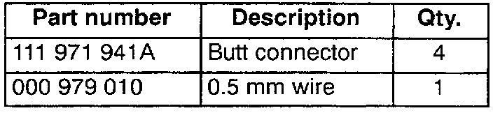
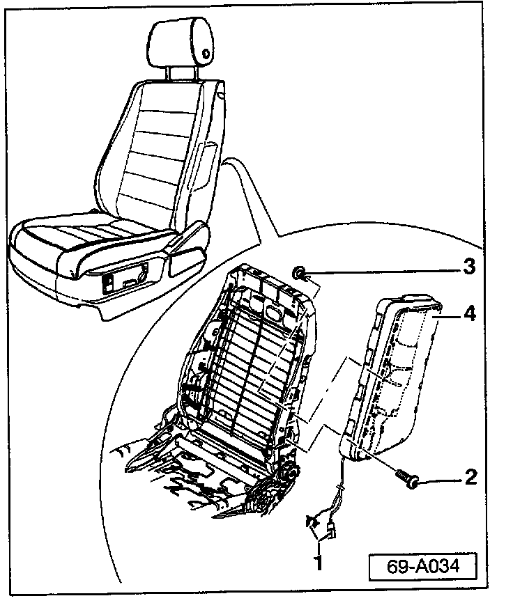
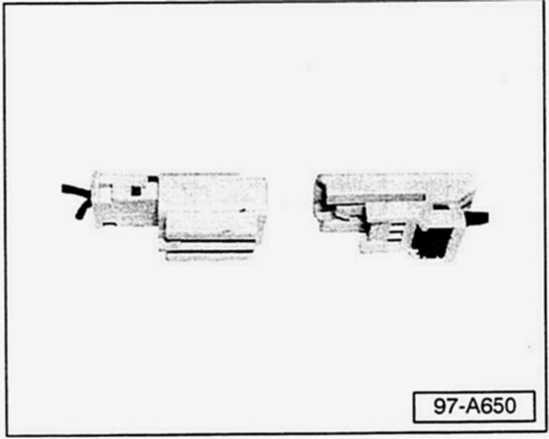
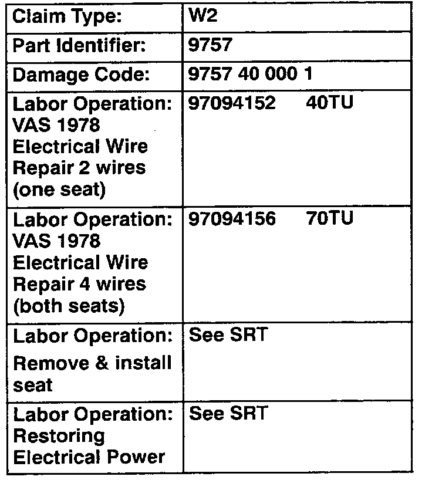

Restraints - Air Bag Lamp ON/DTC's Stored in Memory
Group: 69Number: 05-02
Date: Feb. 2, 2005
Subject:
Side Airbag Igniter, Diagnostic Trouble Code(s) (DTCs) Stored in DTC Memory
Model(s):
Touareg 2004, 2005
Supersedes T.B. Group 69 number 04-02 dated June 3, 2004 due to updated repair instructions.
Condition
Airbag warning light in instrument cluster is ON and one or both of the following DTCs are stored in the DTC memory.
^ 01217 001 "Igniter for side airbag driver's side -N199- Upper limit exceeded"
^ 01218 001 "Igniter for side airbag passenger side -N200- Upper limit exceeded"
May be caused by sporadic "resistance too high" in terminals of connectors for side airbag / seat harness.
Service
Prior to performing the following procedure:
See Repair Manual, Repair Groups 69 and 72, for detailed information).
Tip:
Part numbers listed in this bulletin are for reference only Always check with your Parts Dept. for the latest parts information.

Parts required
Procedure
- Disconnect battery Ground (GND) strap.

- Remove seal (see Repair Manual Group 72 Seat frames "12-way seat, removing and installing".
- Carefully separate connectors -1- of harness to side airbag igniter -N199- (driver seat) or -N200- (passenger seat).
Tip:
Drawing is used to illustrate connector location only seat does not have to be disassembled for repair.

- Remove male and female side of the Yazaki connector (as shown) by cutting one wire at a time.
- Discard connectors.
Using butt splice crimping tool VAS 1978/24:
- Splice the harness together using two 4in. sections of Repair wire Part No: 000 979 010 (from VAS 1978AR wiring repair kit) and 4 butt connectors Part No: 111 971 941A) from wiring harness repair kit 1978.
^ This allows the harness additional slack.
- Wrap all repaired wires using yellow electrical tape to indicate that the wiring has been modified.
- Secure the harness with tie straps.
- Install seat (see Repair Manual Group 72 Seat frames "12-way seat, removing and installing".
- Switch ignition ON.
WARNING
Ensure that there is no person inside the vehicle when connecting the Battery Ground (GND) strap
- Reinstall battery Ground (GND) Strap.
- Connect the VAS 5051 or VAS 5052 Diagnostic tool.
- Check and clear any stored DTCs and verify repair.
Post procedure component reset/relearn (after battery Ground (GND) Disconnect)
Access Start Module
Before starting vehicle, Access Start Module must be reset:
- Turn ignition switch to left most position.
- Let ignition switch return to zero position (at rest when key is in ignition switch).
- Turn ignition switch to the right position to start the engine.
Front windows "One touch feature" With vehicle idling:
- Fully open both front windows.
- Fully close both front windows.
Electronic front seat (if equipped) "Soft stop function" With vehicle idling:
- Hold seat "forward/backward" switch in forward position until front seat moves fully forward and seat stops.
- Release switch.
- Hold seat "forward/backward" switch in forward position to ensure front seat is in fully forward position.
- Release switch.
^ Forward soft stop position is learned.
- Hold seat "forward/backward" switch in backward position until front seat moves fully backward and seat stops.
- Release switch.
- Hold seat "forward/backward" switch in backward position to ensure front seat is in fully backward position.
- Release switch.
^ Backward soft stop position is learned.
- Repeat steps for other front seat.
Electronic steering column (if equipped) With vehicle idling:
- Operate steering column adjustment switch in each direction (up, down, forward and backward) until steering column stops in that direction.
Steering angle sensor & Air suspension
^ Steering angle sensor will temporarily lose calibration (light will illuminate) and must relearn its position.
^ Air suspension will temporarily lose communication with the steering wheel angle sensor (light will illuminate).
- Drive vehicle forward with wheels in the straight ahead position for approx. 45 ft (13.7 meters).

When procedure applies to vehicles within the New Vehicle Limited Warranty, use the table.